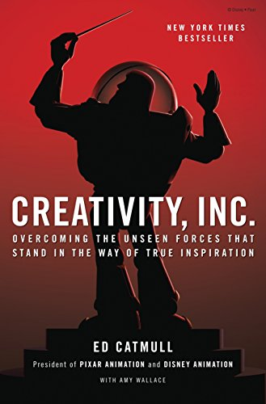

Creativity, Inc., by Catmull
Sunday February 13, 2022
Catmull says it's not a memoir, but of course it is, too, and that's a good thing. I like his focus on getting fear out of organizations and making it possible to do things, to try things, without having rigid plans in advance. Pretty good advice throughout, I think.

Catmull reminds me of the Montessori idea of a prepared environment, when for example he discusses the effect of a particular table on his team (page 5).
He discusses fear about hiring someone smarter than him, which seems sort of weird to me (page 23). Am I scared to hire someone smarter than me? It's always hard to tell relative smartness, of course, but I think in general I've been very happy, the smarter the person.
"Why "Pixar"? The name emerged from a back-and-forth between Alvy and another of our colleagues, Loren Carpenter. Alvy, who spent much of his childhood in Texas and New Mexico, had a fondness for the Spanish language, and was intrigued by how certain nouns in English looked like Spanish verbs—words like "laser," for example. So Alvy lobbied for "Pixer," which he imagined to be a (fake) Spanish verb meaning "to make pictures." Loren countered with "Radar," which he thought sounded more high-tech. That's when it hit them: Pixer + radar = Pixar! It stuck." (page 30)
"["Focus, focus, focus!"] was a particular favorite piece of nonadvice. When people hear it, they nod their heads in agreement as if a great truth has been presented, not realizing that they've been diverted from addressing the far harder problem: deciding what it is that they should be focusing on. There is nothing in this advice that gives you any idea how to figure out where the focus should be, or how to apply your energy to it. It ends up being advice that doesn't mean anything." (page 46)
"Getting the team right is the necessary precursor to getting the ideas right. ... Getting the right people and the right chemistry is more important than getting the right idea." (page 74)
Reminds me of "gelling" (as in Peopleware).
""Trust the process" had morphed into "Assume that the Process Will Fix Things for Us."" (page 79)
"Imagine an old, heavy suitcase whose well-worn handles are hanging by a few threads. The handle is "Trust the Process" or "Story is King"—a pithy statement that seems, on the face of it, to stand for so much more. The suitcase represents all that has gone into the formation of the phrase: the experience, the deep wisdom, the truths that emerge from struggle. Too often, we grab the handle and—without realizing it—walk off without the suitcase. What's more, we don't even think about what we've left behind. After all, the handle is so much easier to carry around than the suitcase." (pages 79-80)
I like this image a lot. I think it connects to a lot of learning/education.
The book closes with a section called "Starting points," which is five pages of short statements, almost aphorisms, that highlight major ideas from the book. Handles, maybe.
""The process of developing a story is one of discovery," Pete says." (page 113)
This is interesting to me in relation to the question of whether math is discovered or created. Surely a story is created, but this connects to the process as being about externalizing and evaluating, connects to no ideas but in things.
"As leaders, we should think of ourselves as teachers and try to create companies in which teaching is seen as a valued way to contribute to the success of the whole." (page 123)
"The problem is that our brains aren't wired to think about it [randomness]. Instead, we are built to look for patterns in sights, sounds, interactions, and events in the world. This mechanism is so ingrained that we see patterns even when they aren't there. There is a subtle reason for this: We can store patterns and conclusions in our heads, but we cannot store randomness itself. Randomness is a concept that defies categorization; by definition, it comes out of nowhere and can't be anticipated. While we intellectually accept that it exists, our brains can't completely grasp it, so it has less impact on our consciousness than things we can see, measure, and categorize." (page 155)
"Everyone says they want to hire excellent people, but in truth we don't really know, at first, who will rise up to make a difference." (page 165)
"Let's pause for a moment and look at it from the position of a manager who is having someone manage up to them. I'm not talking about brownnosing per se but more subtle forms of flattery." (page 172)
Is this what managing up means? I've always thought of it as a more positive thing, where an IC is helping guide their manager and the organization as much as the manager guides the IC, reciprocally. But it seems some people think of "managing up" as a negative thing?
"Craft is what we are expected to know; art is the unexpected use of our craft." (page 196)
"And those cuts [to art programs in schools] stem from a fundamental misconception that art classes are about learning to draw. In fact, they are about learning to see." (page 213)
"Companies, like individuals, do not become exceptional by believing they are exceptional but by understanding the ways in which they aren't exceptional." (page 215)
""You can't manage what you can't measure" is a maxim that is taught and believed by many in both the business and education sectors. But in fact, the phrase is ridiculous—something said by people who are unaware of how much is hidden. A large portion of what we manage can't be measured, and not realizing this has unintended consequences. The problem comes when people think that data paints a full picture, leading them to ignore what they can't see." (page 219)